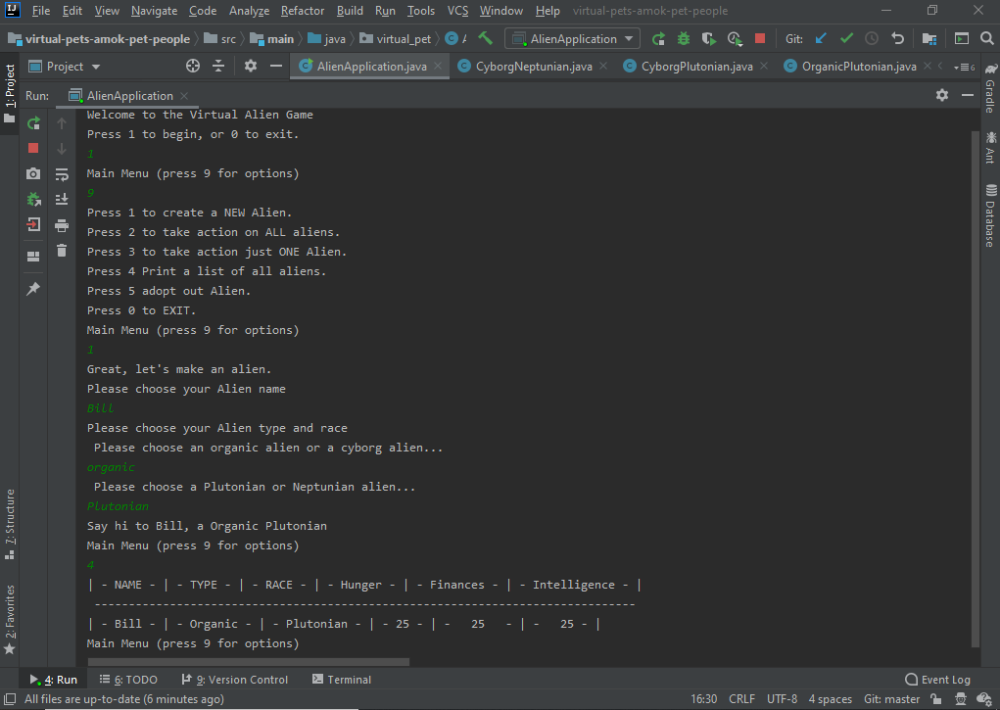

In this project, I worked in a four-person team to create an application called "Virtual Alien Shelter." In this application, users could add aliens to an alien shelter, and then could take action on the aliens to keep them smart, well-fed, and financially secure. Users could feed their aliens, make them read, and make them go to work. This project utilized mulitple classes and interfaces, providing two types of alien, Cyborg and Organic, and two races of alien, Neptunian or Plutonian. The game had a "tick" method, where every move the user took made the hunger, intelligence and finance levels go down, so that the user had to take action to keep these from reaching a critical level.
Skills used: Java, OOP, TDD, Agile (Scrum), Source Control / Git
